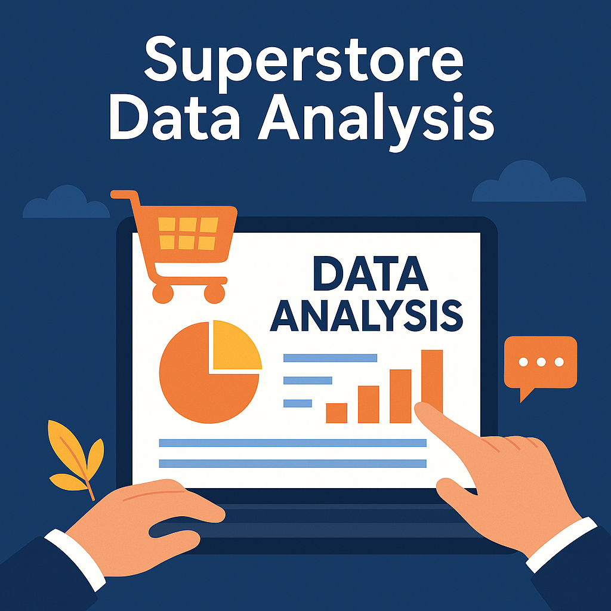

About Me

I'm a Machine Learning Engineer with over 4 years of hands-on experience, currently advancing my knowledge by pursuing a Master’s degree in Information Systems.
My expertise is in architecting robust end-to-end ML pipelines, deploying models into production, and managing scalable cloud infrastructure. I thrive on transforming complex datasets into actionable insights and building intelligent AI solutions that deliver tangible, real-world impact.
Let's connect and build something amazing together.
Experience

Systems Engineer
Tata Consultancy Services – Hyderabad, IN
Nov 2020 – Aug 2023
- Led feature development for Ericsson’s COM platform, focusing on data-driven diagnostics in FCAPS modules.
- Automated large-scale data workflows with Python & SQL, cutting manual effort by 40%.
- Designed & deployed scalable CI/CD pipelines using Jenkins & Azure DevOps.
- Built & validated anomaly-detection models with SHAP for full transparency.
Education
Master of Science in Information Systems
University of Texas at Arlington, TX
2023 – 2025
Bachelor of Technology
JNTU Hyderabad, India
2016 – 2020
Projects


Technical Skills
Languages
PythonJavaC++SQLBash/Shell
ML & Data Science
Scikit-learnTensorFlowPyTorchPandasNumPy
MLOps & DevOps
DockerKubernetesJenkinsGitMLflow
Cloud & Infra
AWSGCPOpenStackTerraform
Methodologies
AgileDevOpsMachine LearningCI/CD
Software Testing
Unit TestingIntegration TestingFunctional Testing
Get In Touch
I’m actively seeking new opportunities and enjoy collaborating on innovative projects. My inbox is always open, so please feel free to reach out. Let's connect!
Say Hello